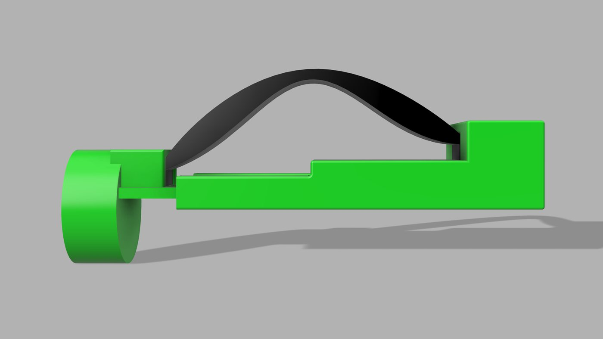
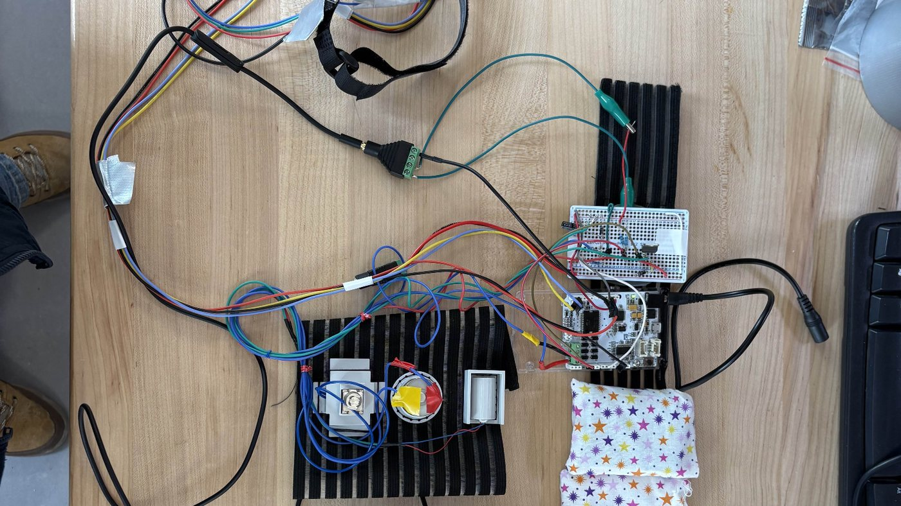
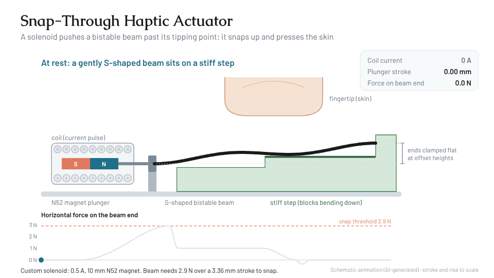
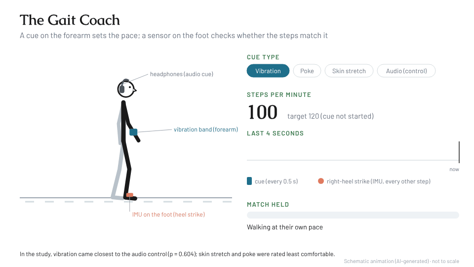
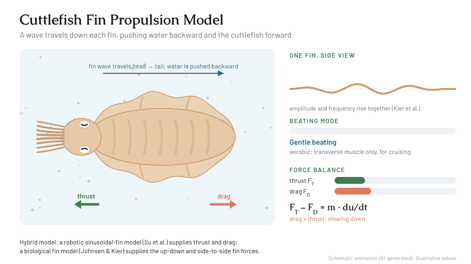

↓ PDF
↓ PDF
Product Design · 2026
ANCORE U Tiller Extension Joint
Competitive sailing hardware with a three-layer elastomeric architecture — polyurethane body, nylon rope core, and woven polymer mesh sleeve. Patent pending.

I'm an M.S. student in Mechanical & Aerospace Engineering at Cornell University, researching underwater acoustics metamaterials, soft biomimetic robotics, and redox-flow battery system integration.
Latest updates on LinkedIn ↗Work
Projects in acoustics, robotics, and product design.
↓ PDF
Product Design · 2026
Competitive sailing hardware with a three-layer elastomeric architecture — polyurethane body, nylon rope core, and woven polymer mesh sleeve. Patent pending.

↓ PDFMicrorobotics · Dec 2025
A compact custom solenoid with a permanent-magnet plunger that triggers a snap-through beam for wearable haptic feedback, sized with a magnetic-vector-potential force model.

↓ PDFHaptics · Dec 2025
A wearable that delivers vibrotactile, skin-stretch, poke, or audio cues at a set walking pace while a foot IMU times how fast the wearer matches it. Vibrotactile cues came closest to the audio control.
 ↓ PDF
↓ PDF
Product Design · Dec 2025
Lightweight eyewear that embeds a low-intensity 40 Hz LED flicker in the temple arms to help students stay focused through long lectures, with thermal, structural, and market analyses.
 ↓ PDF
↓ PDF
Soft Robotics · May 2025
Undergraduate senior project: a 20 cm soft rotary motor in which four liquid Peano-HASEL actuators pull in sequence, turning linear contraction into rotation for underwater propulsion.
 ↓ PDF
↓ PDF
Mechanical Design · Dec 2024
Product design specification for the TR315-r, a 1502 cc inline-3 motorcycle engine designed by a 10-person team. I was project manager and led the fluid mechanics and thermodynamics of engine cooling.
 ↓ PDF
↓ PDF
Biomechanics · Theory · Dec 2024
Theory and literature-review project for a biomechanics course: a hybrid model of cuttlefish fin propulsion that combines biological fin mechanics with a robotic sinusoidal-fin model to estimate forward thrust, which had no existing model.
Visualizations
Animations of how some of my projects work.

Four liquid Peano-HASEL actuators fire in sequence to turn a central shaft. At right, one actuator's pouches zip, shorten, and recover. Schematic animation (AI-generated), not to scale.
Liquid Dielectric Elastomer Actuator Motor for Underwater Propulsion →
A custom solenoid pushes the end of an S-shaped bistable beam. A stiff step stops it bending down, so it stores energy until 2.9 N, then snaps up into an arch that presses the skin and springs back when the power is off. Schematic animation (AI-generated).
Electromagnetic Actuator for Snap-Through Haptics →
A cue on the forearm sets the walking pace and a foot-mounted IMU checks whether the steps match it. Schematic animation (AI-generated), not to scale.
The Gait Coach: Haptic Cues for Gait Pacing →
A wave travels down each fin, pushing water backward and the cuttlefish forward. The hybrid model balances fin thrust against drag. Schematic animation (AI-generated) with illustrative values.
Biological and Robotic Synthesized Cuttlefish Fin Biomechanical Model →Research
Papers, reports, and technical documents I've contributed to.
Upcoming Work
Manuscripts coming out in the next few months.
In preparation.
In preparation.
In preparation with Nathalie Heuzé-Vourc’h (University of Tours); full author list to be finalized.
In preparation with Nathalie Heuzé-Vourc’h (University of Tours) and additional co-authors; author list to be finalized.
Beyond Engineering
Essays from my SAGES writing seminars at Case Western Reserve University.
Background
A bit more on who I am and what drives my work.
I'm a graduate student in Mechanical & Aerospace Engineering at Cornell University. I do my research at the Organic Robotics Lab under Prof. Robert Shepherd, where I am currently working on a new subsystem for the PSIB (Poly Sulfide Iodide Battery) fish project currently run by Douglas Palumbo. Nicknamed "RCADE," this project lies at the intersection of heat transfer and acoustics to improve the capabilities of this biomimetic soft-robotic fish.
Before graduate school I completed my B.S.E. at Case Western Reserve University in Cleveland, Ohio. There I studied under Prof. Chase Cao to develop new actuator designs that implemented liquid dielectric elastomers (Peano-HASEL actuators) to create biomimetic and rotational motion. I also studied under Prof. Angela Dixon to create the Modular Microfluidic Incubator that allowed nose-on-chip devices to be stored in safe environments while nasal deposition experiments took place.
Outside of research I spend time playing Dungeons and Dragons, weightlifting, and playing indie video games with friends. I am a Hefeweizen lover and a cilantro hater. I love the outdoors and enjoy hiking and camping when I find the time off to do so. Most of all I love my friends and I am always willing to try something new with someone at my side.
I'm currently applying to Ph.D. programs for Fall 2027 and open to research collaborations and internships in acoustic engineering, embodied energy, and soft robotics.